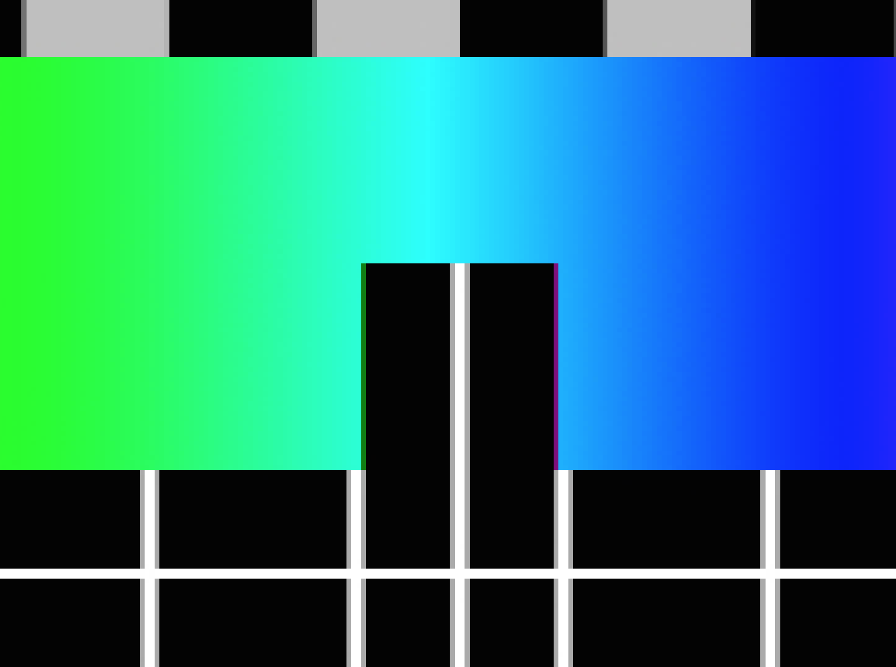
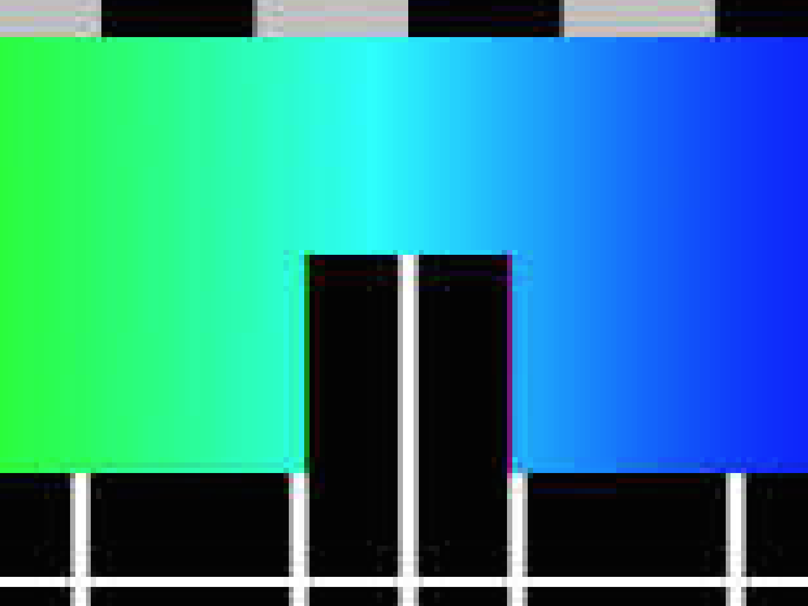
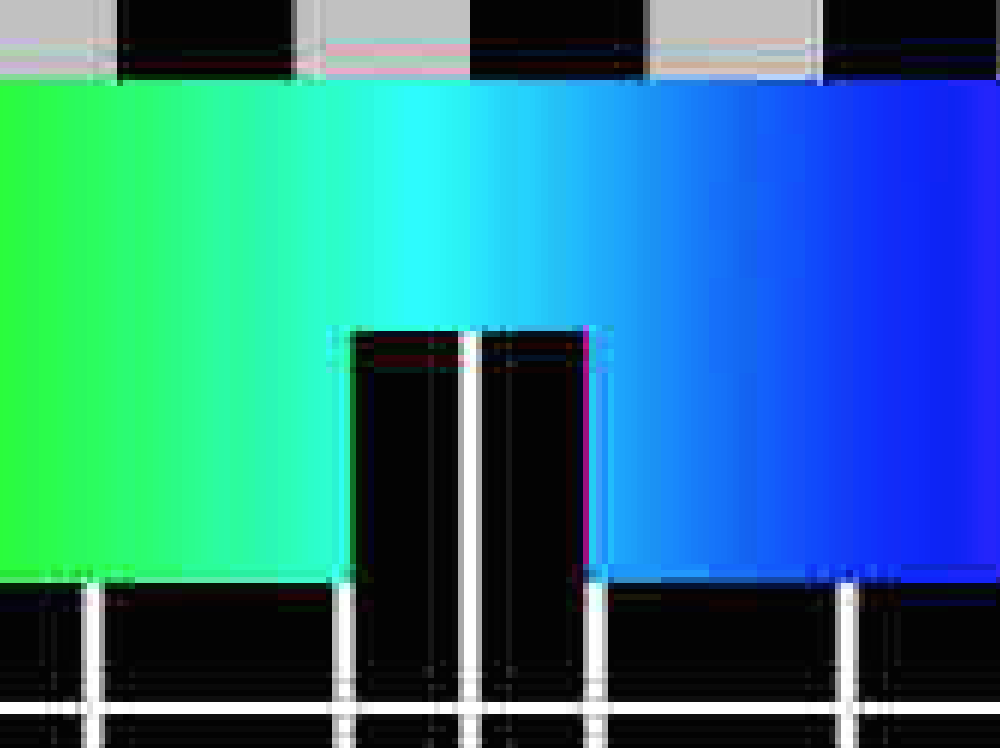
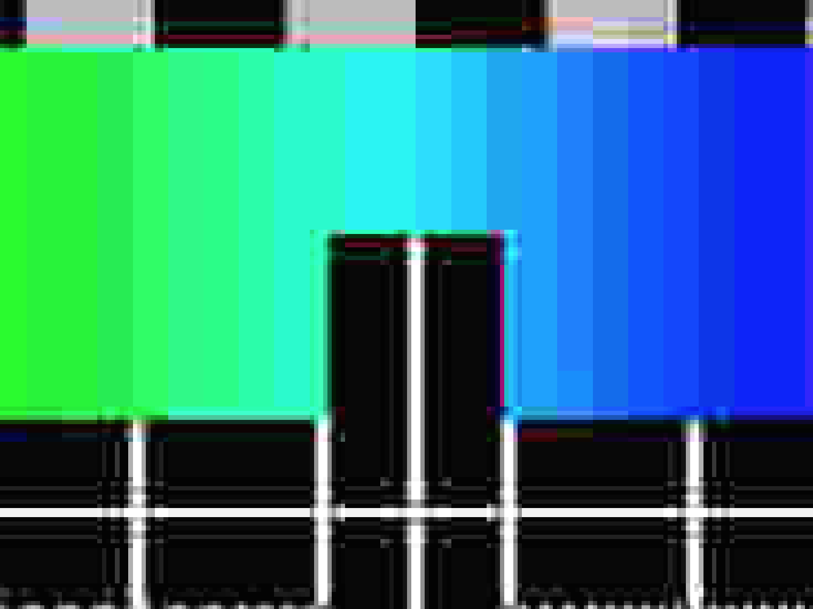
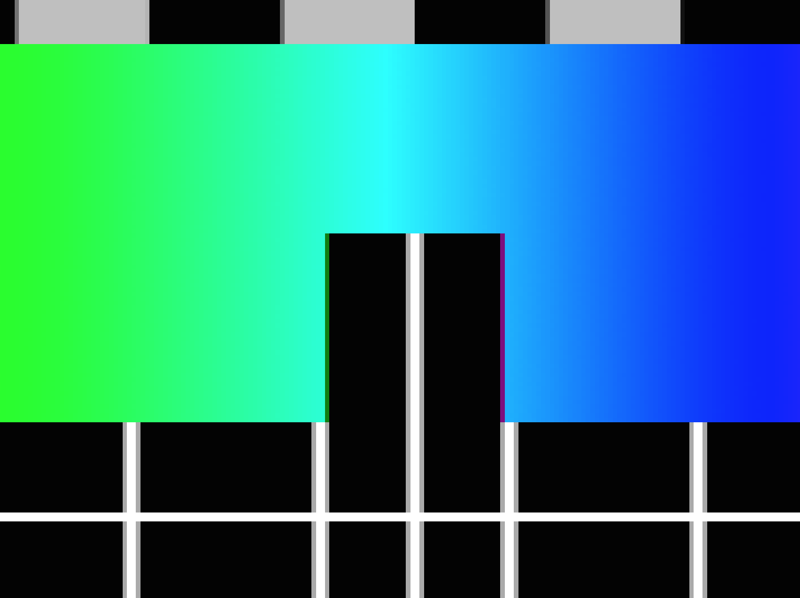
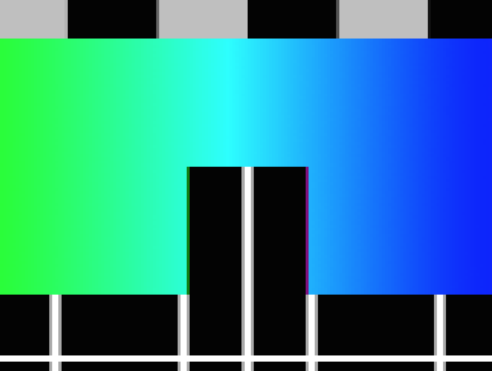
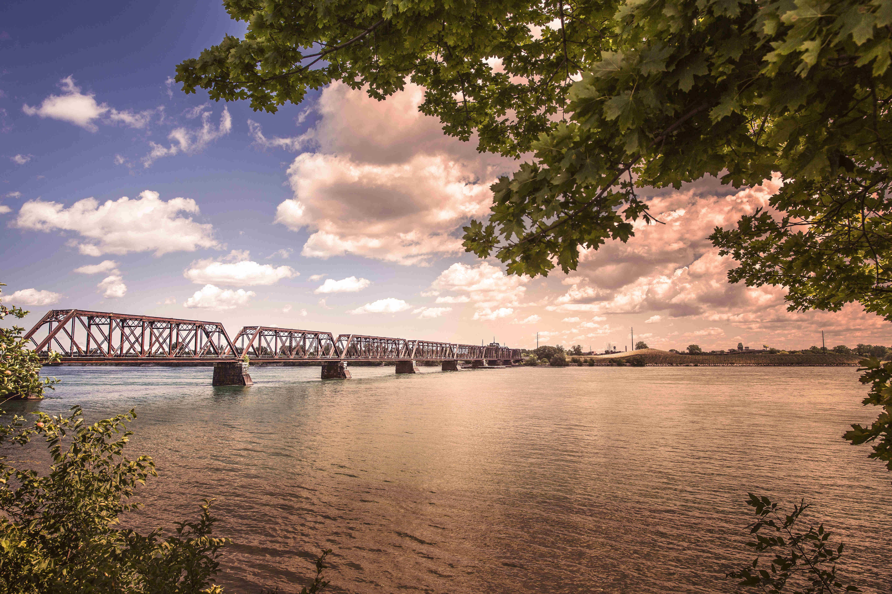
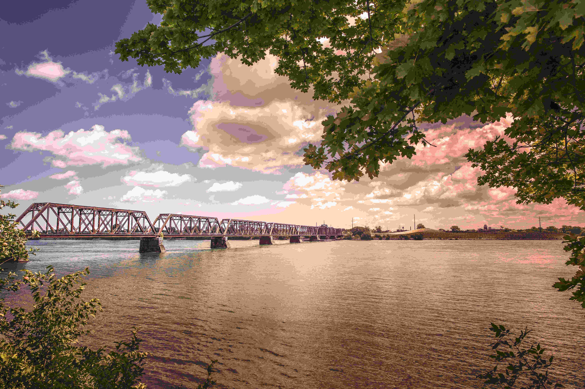

Vi (mig og Jens) startede med at hente prøvebilledet fra Wikipedia, som der var en .png fil til at starte med.
Link til billede: https://en.wikipedia.org/wiki/Philips_PM5544#/media/File:PM5544_with_non-PAL_signals.png
Derefter komprimeret vi billedet på 7 forskellige måder i GIMP, de 7 måder var:
Her er nogle screenshots af de forskellige billede kompressioner som der er blevet zoomet ind på:
Jpeg med kvaliteten 100
Jpeg med kvaliteten 50
Jpeg med kvaliteten 20
Jpeg med kvaliteten 5
PNG billede
BMP
Filstørrelse for de forskellige billeder (prøvebilledet)
Jpeg 100: 115 KB
Jpeg 50: 45 KB
Jpeg 20: 33 KB
Jpeg 5: 20 KB
PNG: 29 KB
BMP: 1,3 MB (1300 KB)
Ud fra dette kan vi konstaterer at PNG er det bedste da det både giver brugeren lossless kompression og har en lav filstørrelse.
Først hentede vi billedet fra http://gratisography.com/ og puttede det ind i Photoshop og gemte det som en BMP fil
Jpeg med kvaliteten 100

Jpeg med kvaliteten 50
Jpeg med kvaliteten 20
Jpeg med kvaliteten 5
PNG billede

BMP

Her er der en sammeligning mellem Jpeg med kvaliteten 100 og Jpeg med kvaliteten 5:
Filstørrelse for de forskellige billeder (Fotografiet)
Jpeg med kvaliteten 100: 17,2 MB (17200 KB)
Jpeg med kvaliteten 50: 3,5 MB (3500 KB)
Jpeg med kvaliteten 20: 1,6 MB (1600 KB)
Jpeg med kvaliteten 5: 590 KB
PNG: 40,5 MB (40500 KB)
BMP: 66,5 MB (66500 KB)
Hvis man vil komprimere et fotografi vil man næsten altid vælge Jpeg med kvaliteten 100, fordi at giver det samme resultat som PNG gør, bare med en mindre filstørrelse.
Hvis man på den anden side vil komprimere et billede som der har mange forudsigelige farver som f.eks. det prøvebillede vi brugte i denne opgave, vil man helst komprimere det i PNG, da det giver en mindre filstørrelse i dette tilfælde.
{kind=link}